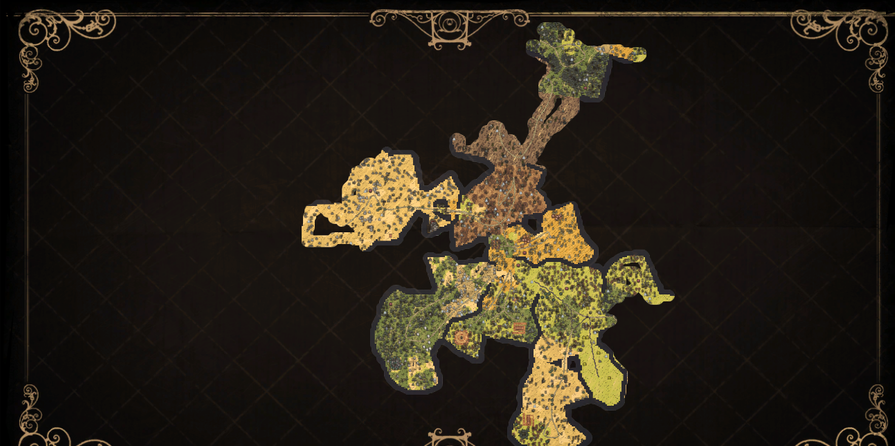
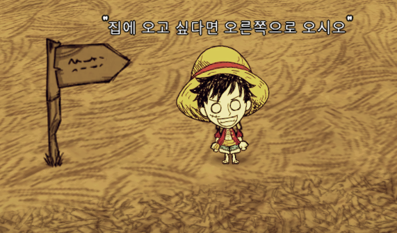
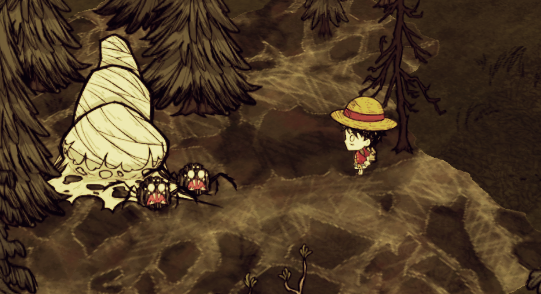
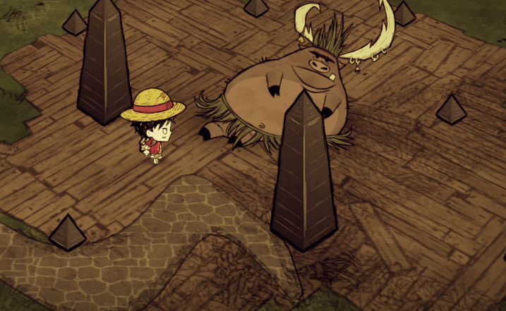

맵 생성시 모든 지형과 자원들이 꼭 하나씩 다 배치되는게 아니기 때문에 별 볼일 없는 맵이 걸리면 미련없이 새로 시작하는게 좋다.
맵 생성시 모든 지형과 자원들이 꼭 하나씩 다 배치되는게 아니기 때문에 별 볼일 없는 맵이 걸리면 미련없이 새로 시작하는게 좋다.
 맵 전체를 밝히는게 좋으므로 초반에는 정착하지않고 횃불을 만들어 해안선과 나란하게 걸어다니며 맵을 밝혀주도록 하자
 밤이 되었는데 재료가 부족하거나 몬스터에게 쫓기고 있어 불을 피울 상황이 안된다면 주변에 있는 반딧불이를 활용해보자
밤이 되었는데 재료가 부족하거나 몬스터에게 쫓기고 있어 불을 피울 상황이 안된다면 주변에 있는 반딧불이를 활용해보자
 만약 눈알 지팡이를 발견한다면 당신은 행운아! 귀여운 체스터가 그 막대를 강아지처럼 따라다닙니다!
만약 눈알 지팡이를 발견한다면 당신은 행운아! 귀여운 체스터가 그 막대를 강아지처럼 따라다닙니다!
 표지판을 설치해두면 물건을 다시 찾으러 갈 유용합니다. 또한 글귀를 적을 수 있습니다.
 초반에 정신력 유지를 위해 꽃을 12개를 조합해 화관을 만드어 보자.
초반에 정신력 유지를 위해 꽃을 12개를 조합해 화관을 만드어 보자.
 거미집은 3층집일때 철거하면 거미알이 나오는데 이 알을 다시 심으면 거미집이 생겨 무한하게 거미를 잡을 수 있다.
 무덤에서는 각종 레어아이템이 나오지만, 한번 무덤을 팔때 마다 정신력을 10소모하니 주의
무덤에서는 각종 레어아이템이 나오지만, 한번 무덤을 팔때 마다 정신력을 10소모하니 주의
 돼지왕은 중요한 재료인 황금을 무한히 얻을 수 있어 미리 위치를 알아두는게 좋다.